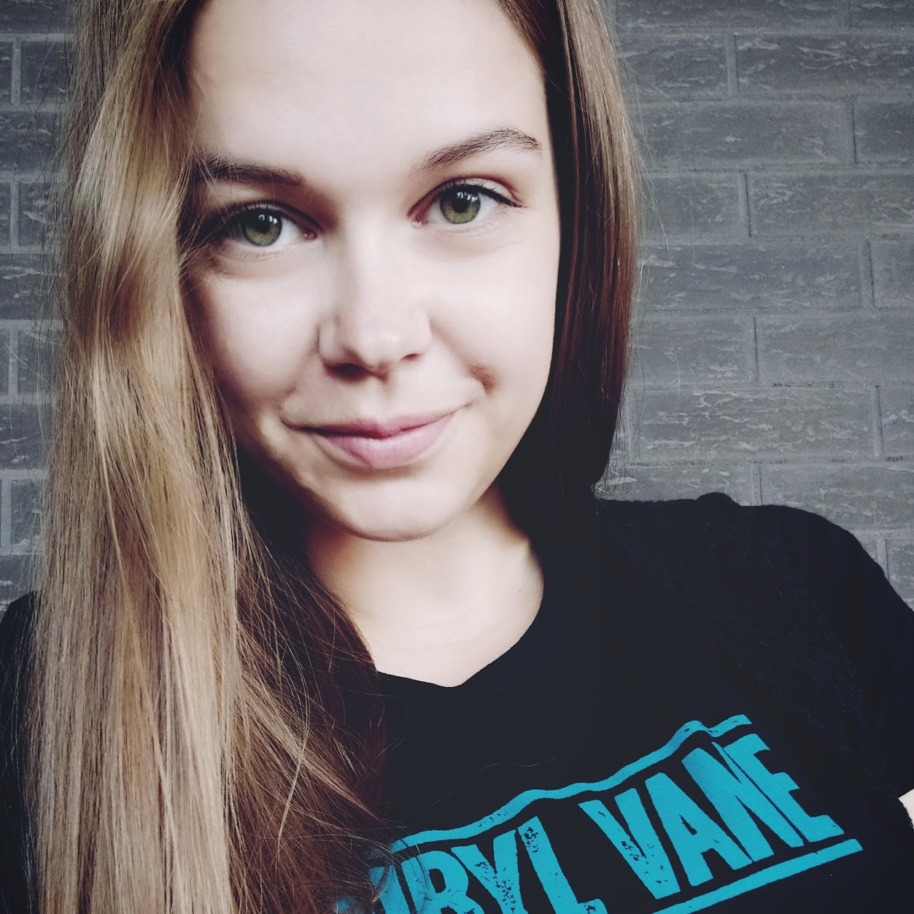

Triin Trautmann

Summary
I'm on a journey to combine my team-leading and environmental analyst experience from the public sector with my newfound passion for the technology and IT industry.
Currently, I'm enrolled in the Software Development Academy, working hard to become a skilled software tester. The course will conclude in October 2023, equipping me with the latest tools and techniques in the field.
I'm excited about the prospects that lie ahead in the technology field and I'm determined to embrace this new challenge with passion and dedication.
Education
- Bachelor of Science | BS, Biology, General | University of Tartu | 2010-2014
- Master of Science | MS, Ecology of the water bodies | University of Tartu | 2014-
- Software Tester | Software Development Academy | June 2023 - October 2023
Work experience
Lead specialist, Estonian Environment Agency
April 2022 - November 2022
- Team lead in environmental use department (water related topics)
- Planning, analyzing, developing, coordinating and participating in the implementation of activities related to the water topics
- Advising the parties
- Managing and supporting the department's water team (10 people) on a daily basis, solving current problems and planning team's work
Chief specialist, Estonian Environment Agency
February 2020 - April 2022
- Chief specialist in data management department (water use related topics)
- Aggregating, checking, entering, processing and analyzing water-use related data
- Participating in the working groups
- Managing registers and databases, making development proposals, manual testing
- Compiling summaries and reports for national statistics and also for European Environment Agency
Senior specialist, Estonian Environmental Research Center
December 2016 - February 2020
- Chief specialist, later senior specialist in the geotechnical laboratory
- Conducting tests and measurements, developing and implementing new methods
- Preparing department reports
- Performing soil laboratory research for construction geologist, geotechnician, designer and builder
Skills
- Attention to detail
- Intellectually curious
- Teamwork
- Problem solving
- Analytical thinking
- Databases
- Manual testing
- Jira
- Quality control
- Test cases
Other